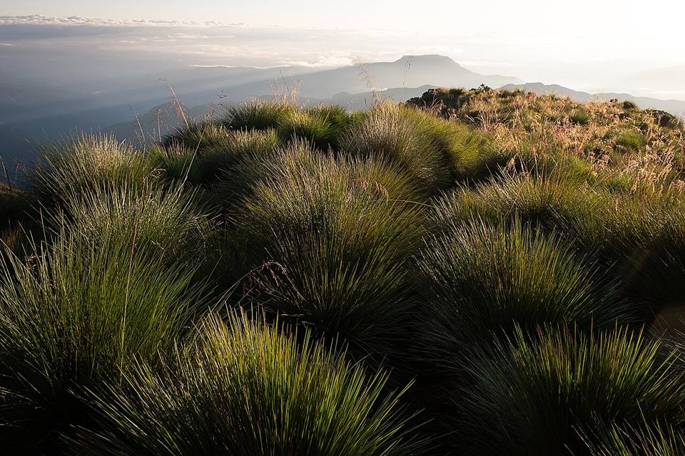
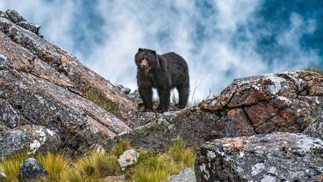

Yungapampa
Département de Cochabamba · Aventure et sommets

Derrière la cordillère du Tunari, la montagne plonge vers les Yungas de Cochabamba. Yungapampa est un refuge communautaire posé à 3 630 m au bord de ce vide, où l'on voit souvent le soleil se lever sur une mer de nuages. On y arrive à pied ou avec des mules depuis Huari Pucara, en passant par des peintures rupestres, des canyons et la cascade de l'Infiernillo. C'est le territoire du jucumari, l'ours à lunettes, du puma et du condor.
3 630 maltitude
2 à 3 jourssur place
Haute altitude. Au-dessus de 3 500 m, le mal des montagnes (soroche) est fréquent. Arrivez progressivement, buvez beaucoup et ralentissez le premier jour.
À faire
- Trek de 2 ou 3 jours depuis Huari Pucara, avec des mules
- Lever du soleil sur la mer de nuages
- Peintures rupestres de Rumy Plaza et cascade de l'Infiernillo
- Observer condors, cerfs andins et peut-être l'ours à lunettes
À goûter
- SilpanchoFine escalope de bœuf panée, sur du riz et des pommes de terre, avec un œuf au plat et une salade de tomates et d'oignons. LE plat de Cochabamba.
- Soupe de quinoaSoupe chaude de quinoa et légumes, servie dans les refuges et les comedores d'altitude. Parfaite quand il fait froid.
Conseil. Accès difficile : environ 4 h de 4x4 depuis Cochabamba par Tiquipaya, puis la marche. Mieux avec une agence ou un guide local, qui organise transport, mules et refuge. Il fait froid la nuit.
Comment aller à Yungapampa
Cochabamba Tour en 4x4 ou excursion · 4 h de 4x4 + 1 à 2 jours de marche
Avec une agence ou un guide local, jusqu'à Huari Pucara, puis à pied avec des mules.
Photos de Yungapampa


Autres lieux de la région
 CochabambaLa « ville de l'éternel printemps » et capitale gastronomique du pays.
CochabambaLa « ville de l'éternel printemps » et capitale gastronomique du pays. Laguna AlalayUne grande lagune au cœur de Cochabamba, refuge d'oiseaux au pied des collines.
Laguna AlalayUne grande lagune au cœur de Cochabamba, refuge d'oiseaux au pied des collines. Pairumani et Villa AlbinaLa villa du roi de l'étain Simón Patiño, ses jardins, et le départ d'un sentier vers le Tunari.
Pairumani et Villa AlbinaLa villa du roi de l'étain Simón Patiño, ses jardins, et le départ d'un sentier vers le Tunari. Parc national TunariLes montagnes juste au-dessus de la ville : lagunes d'altitude et le sommet du Tunari (5 035 m).
Parc national TunariLes montagnes juste au-dessus de la ville : lagunes d'altitude et le sommet du Tunari (5 035 m).- Apote et ses cascades jumellesUne vallée de montagne au-dessus de Tiquipaya, avec deux cascades côte à côte et des sentiers vers le Tunari.
 Laguna CoraniUn grand lac de barrage entre forêts de pins et montagnes, connu pour sa truite.
Laguna CoraniUn grand lac de barrage entre forêts de pins et montagnes, connu pour sa truite. IncachacaUne forêt de nuages au bord du Chapare, avec un pont inca, des cascades et une vieille centrale électrique.
IncachacaUne forêt de nuages au bord du Chapare, avec un pont inca, des cascades et une vieille centrale électrique. Valle Alto : Tarata et ClizaVillages coloniaux de la vallée, marchés et chicha.
Valle Alto : Tarata et ClizaVillages coloniaux de la vallée, marchés et chicha. Quillacollo et Inca RakayRuines incas perchées au-dessus de Sipe Sipe, et Quillacollo, ville de l'Urkupiña.
Quillacollo et Inca RakayRuines incas perchées au-dessus de Sipe Sipe, et Quillacollo, ville de l'Urkupiña. Parc national TorotoroEmpreintes de dinosaures, canyon spectaculaire et grotte d'Umajalanta. Un incontournable depuis Cochabamba.
Parc national TorotoroEmpreintes de dinosaures, canyon spectaculaire et grotte d'Umajalanta. Un incontournable depuis Cochabamba. IncallajtaLe plus grand site inca de Bolivie, dans une vallée isolée.
IncallajtaLe plus grand site inca de Bolivie, dans une vallée isolée. TotoraPetit village colonial très bien conservé sur l'ancienne route vers Santa Cruz.
TotoraPetit village colonial très bien conservé sur l'ancienne route vers Santa Cruz. AiquileLa capitale nationale du charango, à mi-chemin entre Cochabamba et Sucre.
AiquileLa capitale nationale du charango, à mi-chemin entre Cochabamba et Sucre. MizqueVillage colonial d'une vallée chaude, terre de l'ara à front rouge.
MizqueVillage colonial d'une vallée chaude, terre de l'ara à front rouge.